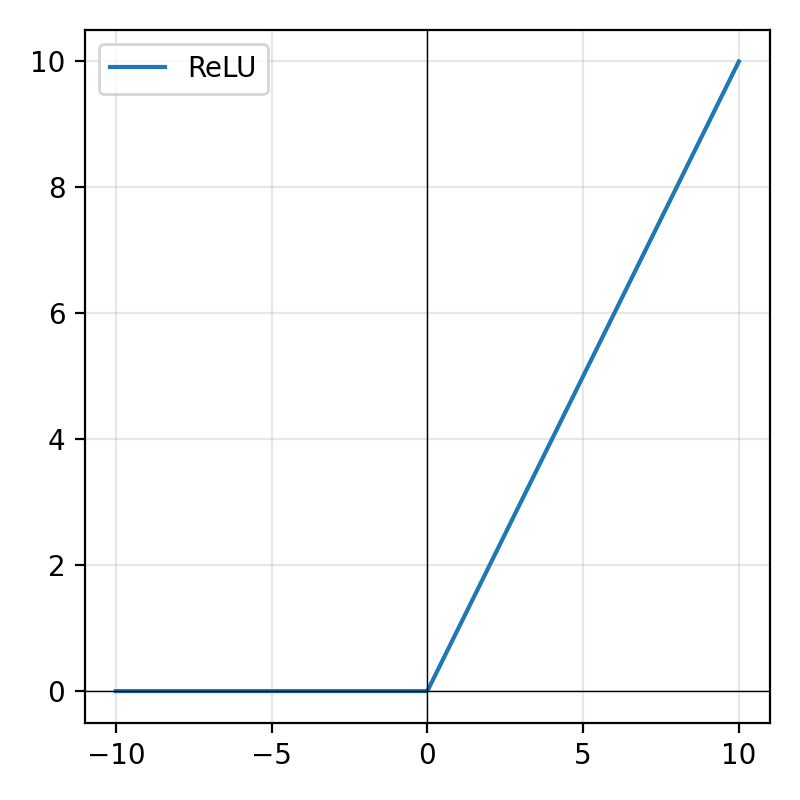
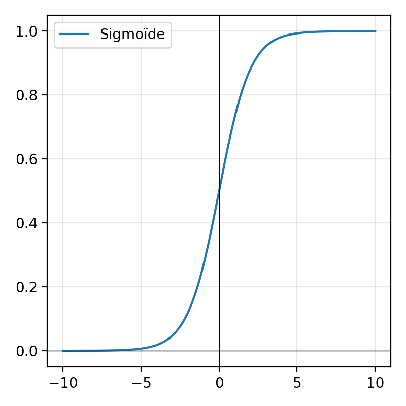
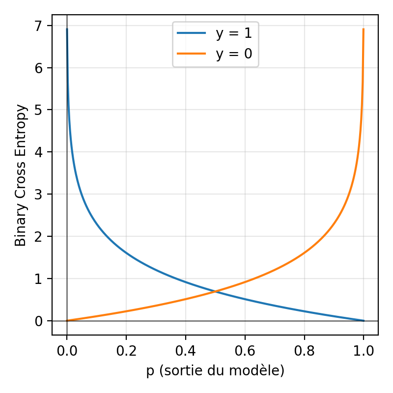

Terminale NSI — Intelligence Artificielle — TP sur 3 à 4 séances
Prétraitement des donnéesCharger, redimensionner et normaliser des images JPEG avec NumPy et Pillow.
Réseau en Python purImplémenter couches, rétropropagation et descente de gradient sans bibliothèque.
Comprendre les mathsMaîtriser ReLU, Sigmoïde, Binary Cross-Entropy et gradients.
Bibliothèques proReproduire l'architecture avec TensorFlow/Keras puis PyTorch et comparer.
Un réseau de neurones ne comprend pas les images directement : il ne traite que des nombres. Il faut donc convertir chaque image en un vecteur de valeurs numériques.
chats/ et chiens/, lire chaque
fichier JPEG.Question : Pourquoi convertit-on l'image en niveaux de gris avant de la traiter ? Quel serait l'inconvénient de garder les 3 canaux RGB ?
Question : Pourquoi normalise-t-on les valeurs entre 0 et 1 plutôt que de garder des entiers entre 0 et 255 ?
Question : Que se passerait-il si on avait beaucoup plus de chats que de chiens dans le dataset ? Comment cela pourrait-il biaiser l'apprentissage ?
Question : Pourquoi est-il important de mélanger le dataset avant de le diviser ? Que se passerait-il si on ne mélangeait pas (les 12 499 premiers exemples sont tous des chats) ?
Question : À quoi sert l'ensemble de test ? Pourquoi ne doit-on jamais l'utiliser pendant l'entraînement ?
seed) permet de reproduire exactement les mêmes
résultats.Les fonctions d'activation introduisent de la non-linéarité dans le réseau. Sans elles, empiler des couches serait inutile (tout resterait linéaire).


Question : Pourquoi utilise-t-on ReLU dans les couches cachées et Sigmoïde uniquement en sortie ? Quelle propriété de la Sigmoïde justifie ce choix pour la sortie ?
L'entropie croisée binaire (BCE) mesure à quel point la prédiction ŷ s'éloigne de la réalité y. Plus ŷ est proche de y, plus la perte est faible.

Question : Calcule à la main la perte BCE pour : y=1, ŷ=0.9 puis pour y=1, ŷ=0.1. Que remarques-tu ? (Rappel : log(0.9) ≈ −0.105, log(0.1) ≈ −2.303)
Question : Pourquoi ajoute-t-on un epsilon (eps = 1e-12) dans la fonction
BCE ? Que se passerait-il si ŷ valait exactement 0 ou 1 ?
Question : Pourquoi initialise-t-on les poids avec des valeurs aléatoires plutôt qu'à 0 ? Que se passerait-il si tous les poids d'une couche valaient exactement 0 ?
Question : Pourquoi mémorise-t-on les valeurs de z, sortie et
entrees dans le neurone ? À quelle étape de l'algorithme en aura-t-on besoin ?
Question : Dans une couche de 64 neurones ReLU, combien peut-on s'attendre à avoir de neurones avec une sortie de 0 ? Pourquoi ? (Indice : pense à ce que fait ReLU sur les valeurs négatives.)
Question : Combien de paramètres (poids + biais) ce réseau contient-il au total ? Calcule : couche 1 (784×64 + 64), couche 2 (64×64 + 64), couche 3 (64×1 + 1).
Question : Explique en tes propres mots ce que fait le gradient ∂L/∂w pour un poids donné. Si ce gradient est positif et grand, dans quel sens va-t-on modifier ce poids ?
Question : Pourquoi multiplie-t-on par derivee_relu(z) lors de la
rétropropagation ? Que se passe-t-il pour les neurones ReLU dont la sortie était 0 ?
Question : Observe l'évolution de la perte au fil des époques. Est-elle en train de diminuer ? Que cela indique-t-il sur l'apprentissage du réseau ?
Question : La précision obtenue est-elle significativement meilleure que 50% (le hasard pour 2 classes) ? Explique pourquoi 500 images et 5 époques sont insuffisantes pour un bon modèle.
Les bibliothèques professionnelles offrent trois avantages majeurs sur notre implémentation Python pur :
| Critère | Python pur | TF / PyTorch |
|---|---|---|
| Vitesse | Très lente | Très rapide |
| Code | Long, explicite | Court, lisible |
| Backprop | Manuelle | Automatique |
| Pédagogie | Excellente | Masquée |
| Données | 500 images max | 24 998 images |
"""
PHASE 3.A — TensorFlow / Keras
Installation : pip install tensorflow (ou tensorflow-cpu)
Documentation : https://www.tensorflow.org/api_docs/python/tf/keras
"""
import numpy as np
import tensorflow as tf
from tensorflow import keras
from tensorflow.keras import layers
import matplotlib.pyplot as plt
import time
print(f"Version TensorFlow : {tf.__version__}")
# ══════════════════════════════════════════════════════════════════
# 1. PRÉPARATION DES DONNÉES
# ══════════════════════════════════════════════════════════════════
# Convertir les listes Python en tableaux NumPy
# (requis par TensorFlow pour les opérations matricielles)
X_train_np = np.array(X_train, dtype=np.float32) # Shape : (19998, 784)
Y_train_np = np.array(Y_train, dtype=np.float32) # Shape : (19998,)
X_test_np = np.array(X_test, dtype=np.float32) # Shape : (5000, 784)
Y_test_np = np.array(Y_test, dtype=np.float32) # Shape : (5000,)
print(f"X_train shape : {X_train_np.shape}")
print(f"Y_train shape : {Y_train_np.shape}")
# ══════════════════════════════════════════════════════════════════
# 2. DÉFINITION DU MODÈLE
# ══════════════════════════════════════════════════════════════════
# keras.Sequential = empilement de couches, l'une après l'autre
modele = keras.Sequential([
# Couche d'entrée : spécifie la taille de l'entrée
layers.Input(shape=(784,)),
# Couche cachée 1 : 64 neurones ReLU
# kernel_initializer='he_normal' = initialisation He (comme en Phase 2)
layers.Dense(64, activation='relu', kernel_initializer='he_normal'),
# Couche cachée 2 : 64 neurones ReLU
layers.Dense(64, activation='relu', kernel_initializer='he_normal'),
# Couche de sortie : 1 neurone Sigmoïde
# → sortie ∈ [0 ; 1] : probabilité d'être un chien
layers.Dense(1, activation='sigmoid')
], name="chats_vs_chiens")
# Résumé de l'architecture
modele.summary()
# ══════════════════════════════════════════════════════════════════
# 3. COMPILATION
# ══════════════════════════════════════════════════════════════════
modele.compile(
# Optimiseur Adam : descente de gradient adaptative (plus efficace que SGD simple)
optimizer=keras.optimizers.Adam(learning_rate=0.001),
# Fonction de perte : Binary Cross-Entropy (comme en Phase 2)
loss='binary_crossentropy',
# Métrique à surveiller pendant l'entraînement
metrics=['accuracy']
)
# ══════════════════════════════════════════════════════════════════
# 4. ENTRAÎNEMENT
# ══════════════════════════════════════════════════════════════════
print("\nDébut de l'entraînement TensorFlow...")
debut = time.time()
historique = modele.fit(
X_train_np, Y_train_np,
epochs=20, # 20 passages sur le dataset complet
batch_size=32, # Traiter 32 images à la fois (mini-batch SGD)
validation_split=0.1, # 10% de X_train pour la validation
verbose=1 # Afficher la progression
)
duree = time.time() - debut
print(f"\nEntraînement terminé en {duree:.1f} secondes !")
# ══════════════════════════════════════════════════════════════════
# 5. ÉVALUATION
# ══════════════════════════════════════════════════════════════════
perte_test, precision_test = modele.evaluate(X_test_np, Y_test_np, verbose=0)
print(f"\n{'='*45}")
print(f" ÉVALUATION SUR {len(X_test)} IMAGES DE TEST")
print(f"{'='*45}")
print(f" Perte : {perte_test:.4f}")
print(f" Précision : {precision_test*100:.1f}%")
print(f"{'='*45}")
# ══════════════════════════════════════════════════════════════════
# 6. COURBES D'APPRENTISSAGE
# ══════════════════════════════════════════════════════════════════
fig, (ax1, ax2) = plt.subplots(1, 2, figsize=(12, 4))
# Courbe de perte
ax1.plot(historique.history['loss'], label='Entraînement', color='#ffc107')
ax1.plot(historique.history['val_loss'], label='Validation', color='#7effc8')
ax1.set_title('Perte (Binary Cross-Entropy)')
ax1.set_xlabel('Époque')
ax1.set_ylabel('Perte')
ax1.legend()
ax1.grid(True, alpha=0.3)
# Courbe de précision
ax2.plot(historique.history['accuracy'], label='Entraînement', color='#ffc107')
ax2.plot(historique.history['val_accuracy'], label='Validation', color='#7effc8')
ax2.set_title('Précision (Accuracy)')
ax2.set_xlabel('Époque')
ax2.set_ylabel('Précision')
ax2.legend()
ax2.grid(True, alpha=0.3)
plt.tight_layout()
plt.savefig('courbes_tensorflow.png', dpi=100, bbox_inches='tight')
plt.show()
print("Courbes sauvegardées dans courbes_tensorflow.png")Question : Compare le temps d'entraînement TensorFlow (20 époques, 24 998 images) avec le temps de la Phase 2 (5 époques, 500 images). Quel est le rapport de vitesse approximatif ?
Question : Qu'est-ce qu'un batch_size de 32 ? Pourquoi utilise-t-on des mini-lots plutôt que de traiter toutes les images une par une (comme en Phase 2) ?
Sequential."""
PHASE 3.B — PyTorch
Installation : pip install torch torchvision
Documentation : https://pytorch.org/docs/stable/
"""
import torch
import torch.nn as nn
import torch.optim as optim
from torch.utils.data import DataLoader, TensorDataset
import numpy as np
import matplotlib.pyplot as plt
import time
print(f"Version PyTorch : {torch.__version__}")
print(f"GPU disponible : {torch.cuda.is_available()}")
device = torch.device('cuda' if torch.cuda.is_available() else 'cpu')
print(f"Dispositif : {device}")
# ══════════════════════════════════════════════════════════════════
# 1. PRÉPARATION DES DONNÉES (Tenseurs PyTorch)
# ══════════════════════════════════════════════════════════════════
# PyTorch utilise des "tenseurs" (comme des tableaux NumPy, mais différentiables)
X_train_t = torch.FloatTensor(X_train).to(device) # Shape : (19998, 784)
Y_train_t = torch.FloatTensor(Y_train).unsqueeze(1).to(device) # Shape : (19998, 1)
X_test_t = torch.FloatTensor(X_test).to(device)
Y_test_t = torch.FloatTensor(Y_test).unsqueeze(1).to(device)
# DataLoader : itérateur qui fournit des mini-lots mélangés automatiquement
train_dataset = TensorDataset(X_train_t, Y_train_t)
train_loader = DataLoader(train_dataset, batch_size=32, shuffle=True)
print(f"Nombre de mini-lots par époque : {len(train_loader)}")
# ══════════════════════════════════════════════════════════════════
# 2. DÉFINITION DU MODÈLE (classe Python héritant de nn.Module)
# ══════════════════════════════════════════════════════════════════
class ReseauChatsChiens(nn.Module):
"""
Réseau de neurones PyTorch : 784 → 64 → 64 → 1.
Hérite de nn.Module : PyTorch gère automatiquement les paramètres
et le calcul des gradients.
"""
def __init__(self):
super().__init__()
# Définition des couches linéaires (équivalent à nos "Couche")
# nn.Linear(in, out) = couche avec poids et biais, sans activation
self.couche1 = nn.Linear(784, 64) # 784 → 64
self.couche2 = nn.Linear(64, 64) # 64 → 64
self.couche3 = nn.Linear(64, 1) # 64 → 1
# Initialisation He (comme en Phase 2)
nn.init.kaiming_normal_(self.couche1.weight, mode='fan_in', nonlinearity='relu')
nn.init.kaiming_normal_(self.couche2.weight, mode='fan_in', nonlinearity='relu')
nn.init.xavier_normal_(self.couche3.weight)
def forward(self, x):
"""
Propagation avant : équivalent à notre méthode feedforward().
PyTorch appelle cette méthode automatiquement.
Paramètre :
x (Tensor) : batch d'images, shape (batch_size, 784)
Retour :
Tensor : prédictions, shape (batch_size, 1)
"""
# Couche 1 : linéaire + ReLU
x = torch.relu(self.couche1(x))
# Couche 2 : linéaire + ReLU
x = torch.relu(self.couche2(x))
# Couche 3 : linéaire + Sigmoïde
x = torch.sigmoid(self.couche3(x))
return x
# Instanciation et affichage
modele_pt = ReseauChatsChiens().to(device)
print(modele_pt)
print(f"\nNombre total de paramètres : "
f"{sum(p.numel() for p in modele_pt.parameters()):,}")
# ══════════════════════════════════════════════════════════════════
# 3. ENTRAÎNEMENT
# ══════════════════════════════════════════════════════════════════
# Fonction de perte : Binary Cross-Entropy (identique à Phase 2)
critere = nn.BCELoss()
# Optimiseur Adam (adaptatif, plus performant que SGD simple)
optimiseur = optim.Adam(modele_pt.parameters(), lr=0.001)
nb_epochs = 20
historique_pertes = []
historique_precision = []
print(f"\nEntraînement PyTorch sur {nb_epochs} époques...")
debut = time.time()
for epoch in range(nb_epochs):
modele_pt.train() # Mode entraînement (active dropout si présent)
perte_epoch = 0.0
for X_batch, Y_batch in train_loader:
# 1) Réinitialiser les gradients (CRUCIAL en PyTorch !)
optimiseur.zero_grad()
# 2) Propagation avant
predictions = modele_pt(X_batch)
# 3) Calcul de la perte
perte = critere(predictions, Y_batch)
# 4) Rétropropagation (calcul automatique des gradients)
perte.backward()
# 5) Mise à jour des poids
optimiseur.step()
perte_epoch += perte.item()
# Évaluation de précision après chaque époque
modele_pt.eval() # Mode évaluation (désactive dropout)
with torch.no_grad(): # Pas besoin de gradients pour l'évaluation
preds_test = (modele_pt(X_test_t) >= 0.5).float()
precision = (preds_test == Y_test_t).float().mean().item()
perte_moy = perte_epoch / len(train_loader)
historique_pertes.append(perte_moy)
historique_precision.append(precision)
print(f"Époque {epoch+1:2d}/{nb_epochs} | "
f"Perte : {perte_moy:.4f} | Précision test : {precision*100:.1f}%")
duree = time.time() - debut
print(f"\nEntraînement terminé en {duree:.1f} secondes !")
# ══════════════════════════════════════════════════════════════════
# 4. COURBES D'APPRENTISSAGE
# ══════════════════════════════════════════════════════════════════
fig, (ax1, ax2) = plt.subplots(1, 2, figsize=(12, 4))
ax1.plot(historique_pertes, color='#ffc107', linewidth=2)
ax1.set_title('Perte — PyTorch')
ax1.set_xlabel('Époque')
ax1.set_ylabel('Perte BCE')
ax1.grid(True, alpha=0.3)
ax2.plot([p*100 for p in historique_precision], color='#7effc8', linewidth=2)
ax2.set_title('Précision test — PyTorch')
ax2.set_xlabel('Époque')
ax2.set_ylabel('Précision (%)')
ax2.grid(True, alpha=0.3)
plt.tight_layout()
plt.savefig('courbes_pytorch.png', dpi=100, bbox_inches='tight')
plt.show()
print("Courbes sauvegardées dans courbes_pytorch.png")Question : En PyTorch, on appelle optimiseur.zero_grad() au début de chaque
mini-lot. Que se passerait-il si on oubliait cette ligne ?
Question : Qu'est-ce que torch.no_grad() et pourquoi l'utilise-t-on pendant
l'évaluation ?
nn.Module.forward() = notre feedforward(). PyTorch l'appelle
automatiquement.perte.backward() calcule tous les gradients automatiquement (plus besoin
de coder la rétropropagation).| Critère | Python pur | TensorFlow / Keras | PyTorch |
|---|---|---|---|
| Compréhension | ★★★ Maximale : chaque ligne de la rétropropagation est explicite | ★★ Masquée derrière l'API Keras | ★★ Masquée mais plus transparente |
| Vitesse | Très lente : ∼1 min / 100 images | Très rapide : ∼30s / 24 998 images | Très rapide : ∼30s / 24 998 images |
| Images traitées | 500 max (raisonnable) | 24 998 (dataset complet) | 24 998 (dataset complet) |
| Précision typique | ∼55–65% (peu d'images, peu d'époques) | ∼75–85% (20 époques) | ∼75–85% (20 époques) |
| Code nécessaire | ∼200 lignes (avec rétropropagation) | ∼30 lignes | ∼60 lignes |
| Rétropropagation | Manuelle, explicite | Automatique | Automatique (.backward()) |
| GPU | Non | Oui (automatique) | Oui (.to(device)) |
| Usage principal | Pédagogie, compréhension | Production, déploiement | Recherche, flexibilité |
Question : La précision obtenue avec TensorFlow/PyTorch est-elle parfaite ? Cite deux pistes pour améliorer les résultats. (Indice : pense à l'architecture, aux données, à la régularisation.)
Question : Pourquoi la précision sur l'ensemble de validation (ou test) est-elle généralement inférieure à la précision sur l'ensemble d'entraînement ? Comment appelle-t-on ce phénomène ?
| Notion | Définition | Rôle dans le réseau |
|---|---|---|
| Vecteur d'entrée | Image 28×28 aplatie en 784 valeurs ∈ [0;1] | Représentation numérique de l'image pour le réseau |
| ReLU | max(0, z) : éteint les neurones négatifs | Activation des couches cachées, évite la disparition du gradient |
| Sigmoïde | 1/(1+e⁻ᶻ) ∈ [0;1] | Sortie interprétable comme probabilité (chien) |
| Binary Cross-Entropy | −[y·log(ŷ) + (1−y)·log(1−ŷ)] | Mesure l'erreur de classification pour 2 classes |
| Rétropropagation | Propagation du gradient à rebours via la règle de chaîne | Calcul de la responsabilité de chaque poids dans l'erreur |
| Descente de gradient | w ← w − α · ∂L/∂w | Ajustement itératif des poids pour minimiser la perte |
| Taux d'apprentissage α | Taille du pas de mise à jour | Équilibre vitesse et stabilité de la convergence |
| Surapprentissage | Modèle trop spécialisé sur les données d'entraînement | Détecté par l'écart perte entraînement / validation |
Dropout(0.3) pour réduire l'overfittingConv2D avec KerasDans les phases précédentes, notre MLP aplatissait chaque image en un vecteur de 784 valeurs. Ce faisant, il détruisait toute notion de voisinage spatial : le pixel en haut à gauche et son voisin immédiat devenaient deux informations sans lien. Le CNN (Réseau de Neurones Convolutif) résout ce problème en raisonnant directement sur des régions locales de l'image.
Une convolution applique un petit filtre (kernel) en le faisant glisser sur toute l'image. À chaque position, on calcule le produit scalaire entre le filtre et le patch d'image. Le résultat est une feature map qui révèle où le motif est présent.
En appliquant le filtre "Bords V" sur une image contenant un trait vertical, que se passe-t-il sur la feature map ? Combien de paramètres ce filtre utilise-t-il, contre combien pour un neurone MLP connecté à une image 14×14 ?
Le MLP avait ~55 000 paramètres, ce CNN en a ~121 000 — pourtant il généralise mieux.
Comment l'expliquer ? Quel rôle joue le Dropout(0.5) ?
# ── Phase 4A : CNN avec TensorFlow / Keras ──────────────────────────────
import numpy as np
import tensorflow as tf
from tensorflow import keras
import matplotlib.pyplot as plt
# Récupère X_train, X_test, y_train, y_test depuis la Phase 1
# X = liste de vecteurs 784 valeurs, Y = liste de labels 0/1
# ── Reshape pour le CNN : (N, 28, 28, 1) ────────────────────────────────
# Le CNN attend des images 2D avec un canal → (N, hauteur, largeur, canaux)
X_train_cnn = np.array(X_train).reshape(-1, 28, 28, 1)
X_test_cnn = np.array(X_test).reshape(-1, 28, 28, 1)
y_train_arr = np.array(y_train, dtype=np.float32)
y_test_arr = np.array(y_test, dtype=np.float32)
# Vérification des dimensions
print(f"Train : {X_train_cnn.shape} — Test : {X_test_cnn.shape}")
# → Train : (19998, 28, 28, 1) — Test : (5000, 28, 28, 1)# ── Construction du modèle CNN ──────────────────────────────────────────
modele_cnn = keras.Sequential([
# ── Bloc convolutif 1 ────────────────────────────────────────────────
keras.layers.Conv2D(
32, # 32 filtres différents
kernel_size=(3, 3), # chaque filtre fait 3×3 pixels
activation='relu',
input_shape=(28, 28, 1)
),
keras.layers.MaxPooling2D((2, 2)), # 26×26 → 13×13
# ── Bloc convolutif 2 ────────────────────────────────────────────────
keras.layers.Conv2D(64, (3, 3), activation='relu'), # 13×13 → 11×11
keras.layers.MaxPooling2D((2, 2)), # 11×11 → 5×5
# ── Classifieur MLP final ────────────────────────────────────────────
keras.layers.Flatten(), # 5×5×64 = 1600 valeurs
keras.layers.Dense(64, activation='relu'),
keras.layers.Dropout(0.5), # désactive 50% des neurones
keras.layers.Dense(1, activation='sigmoid') # sortie binaire
])
modele_cnn.compile(
optimizer='adam',
loss='binary_crossentropy',
metrics=['accuracy']
)
modele_cnn.summary()# ── Entraînement du CNN ─────────────────────────────────────────────────
historique = modele_cnn.fit(
X_train_cnn, y_train_arr,
epochs=20,
batch_size=32,
validation_split=0.1, # 10% du train pour valider
verbose=1
)
# ── Évaluation ──────────────────────────────────────────────────────────
perte_test, precision_test = modele_cnn.evaluate(X_test_cnn, y_test_arr)
print(f"Précision CNN sur le test : {precision_test*100:.1f}%")
# ── Courbes d'apprentissage ──────────────────────────────────────────────
fig, (ax1, ax2) = plt.subplots(1, 2, figsize=(12, 4))
ax1.plot(historique.history['accuracy'], label='Train', color='#ffc107')
ax1.plot(historique.history['val_accuracy'],label='Validation',color='#7effc8')
ax1.set_title('Précision'); ax1.legend(); ax1.set_ylim(0, 1)
ax2.plot(historique.history['loss'], label='Train', color='#ffc107')
ax2.plot(historique.history['val_loss'], label='Validation',color='#7effc8')
ax2.set_title('Perte (BCE)'); ax2.legend()
plt.tight_layout(); plt.show()# ── Visualisation des feature maps ──────────────────────────────────────
# Modèle intermédiaire qui s'arrête après la 1ère Conv2D
modele_intermediaire = keras.Model(
inputs=modele_cnn.input,
outputs=modele_cnn.layers[0].output # couche Conv2D n°0
)
image_test = X_test_cnn[0:1] # shape (1, 28, 28, 1)
feature_maps = modele_intermediaire.predict(image_test)
# feature_maps.shape → (1, 26, 26, 32) : 32 feature maps de 26×26
# Affichage des 32 feature maps en grille
fig, axes = plt.subplots(4, 8, figsize=(14, 7))
for i, ax in enumerate(axes.flat):
ax.imshow(feature_maps[0, :, :, i], cmap='viridis')
ax.set_title(f'Filtre {i}', fontsize=7)
ax.axis('off')
plt.suptitle('Feature maps — Conv2D couche 1 (32 filtres)')
plt.tight_layout(); plt.show()
# ── Poids appris des filtres ─────────────────────────────────────────────
filtres, biais = modele_cnn.layers[0].get_weights()
# filtres.shape → (3, 3, 1, 32)
fig, axes = plt.subplots(4, 8, figsize=(12, 6))
for i, ax in enumerate(axes.flat):
ax.imshow(filtres[:, :, 0, i], cmap='RdBu', vmin=-1, vmax=1)
ax.axis('off')
plt.suptitle('Poids appris des 32 filtres (rouge=négatif, bleu=positif)')
plt.tight_layout(); plt.show()Conv2D(32, (3,3)) apprend 32 détecteurs de motifs locaux différents avec seulement 320
paramètresMaxPooling2D((2,2)) divise la résolution par 2 tout en conservant les features importantes
Dropout(0.5) désactive 50% des neurones au hasard à chaque batch — régularisation puissante
# ── Phase 4B : CNN avec PyTorch ─────────────────────────────────────────
import torch
import torch.nn as nn
import torch.optim as optim
from torch.utils.data import DataLoader, TensorDataset
import numpy as np
# ── Préparation des tenseurs ─────────────────────────────────────────────
# PyTorch : canaux en 2ème position (N, C, H, W) → (N, 1, 28, 28)
X_tr = torch.tensor(np.array(X_train).reshape(-1, 1, 28, 28), dtype=torch.float32)
y_tr = torch.tensor(y_train, dtype=torch.float32).unsqueeze(1)
dataset = TensorDataset(X_tr, y_tr)
loader = DataLoader(dataset, batch_size=32, shuffle=True)
# ── Définition du modèle CNN ─────────────────────────────────────────────
class CNNChatChien(nn.Module):
def __init__(self):
super().__init__()
self.conv1 = nn.Conv2d(1, 32, kernel_size=3) # entrée 1 canal
self.conv2 = nn.Conv2d(32, 64, kernel_size=3)
self.pool = nn.MaxPool2d(2, 2)
self.relu = nn.ReLU()
self.drop = nn.Dropout(0.5)
self.fc1 = nn.Linear(64 * 5 * 5, 64) # 5×5×64 = 1600
self.fc2 = nn.Linear(64, 1)
self.sigmoid = nn.Sigmoid()
def forward(self, x):
x = self.pool(self.relu(self.conv1(x))) # → (N, 32, 13, 13)
x = self.pool(self.relu(self.conv2(x))) # → (N, 64, 5, 5)
x = x.view(-1, 64 * 5 * 5) # → (N, 1600) aplatissement
x = self.drop(self.relu(self.fc1(x))) # → (N, 64)
return self.sigmoid(self.fc2(x)) # → (N, 1)
modele_cnn_pt = CNNChatChien()
print(modele_cnn_pt)# ── Boucle d'entraînement PyTorch ───────────────────────────────────────
critere = nn.BCELoss()
optimiseur = optim.Adam(modele_cnn_pt.parameters(), lr=0.001)
for epoch in range(20):
modele_cnn_pt.train()
perte_epoch, corrects, total = 0, 0, 0
for X_batch, y_batch in loader:
optimiseur.zero_grad() # remet les gradients à zéro
predictions = modele_cnn_pt(X_batch) # propagation avant
perte = critere(predictions, y_batch) # calcul de la perte
perte.backward() # rétropropagation auto
optimiseur.step() # mise à jour des poids
perte_epoch += perte.item()
pred_labels = (predictions > 0.5).float()
corrects += (pred_labels == y_batch).sum().item()
total += y_batch.size(0)
precision = corrects / total
print(f"Epoch {epoch+1:2d}/20 — Perte : {perte_epoch/len(loader):.4f} — Précision : {precision*100:.1f}%")# ── Visualisation des feature maps avec PyTorch ──────────────────────────
import matplotlib.pyplot as plt
modele_cnn_pt.eval()
image_test = X_te[0:1] # (1, 1, 28, 28)
with torch.no_grad():
# Sortie après conv1 + ReLU + Pool
apres_conv1 = modele_cnn_pt.pool(
modele_cnn_pt.relu(modele_cnn_pt.conv1(image_test))
) # shape : (1, 32, 13, 13)
# Affichage des 32 feature maps
fig, axes = plt.subplots(4, 8, figsize=(14, 7))
for i, ax in enumerate(axes.flat):
fmap = apres_conv1[0, i].numpy()
ax.imshow(fmap, cmap='viridis')
ax.set_title(f'F{i}', fontsize=7)
ax.axis('off')
plt.suptitle('Feature maps Conv1 — PyTorch (32 filtres, 13×13)')
plt.tight_layout(); plt.show()
# ── Poids des filtres appris ──────────────────────────────────────────────
filtres_pt = modele_cnn_pt.conv1.weight.data.numpy() # (32, 1, 3, 3)
fig, axes = plt.subplots(4, 8, figsize=(12, 6))
for i, ax in enumerate(axes.flat):
ax.imshow(filtres_pt[i, 0], cmap='RdBu', vmin=-1, vmax=1)
ax.axis('off')
plt.suptitle('Filtres 3×3 appris — Conv1 PyTorch')
plt.tight_layout(); plt.show()| Critère | Python pur | MLP (TF/PT) | CNN (TF/PT) |
|---|---|---|---|
| Structure données | Vecteur 784 plat | Vecteur 784 plat | Image 28×28×1 (2D) |
| Localité spatiale | Aucune | Aucune | Patches 3×3 |
| Partage des poids | Non | Non | Filtre global |
| Invariance translation | Non | Non | Oui (pool) |
| Précision typique | 55–65% | 63–68% | 78–86% |
| Visualisable | Difficile | Difficile | Feature maps |
| Compréhension péda. | ★★★ Maximale | ★★ Bonne | ★★★ + Visuelle |
Synthèse : Le CNN a plus de paramètres que le MLP mais généralise mieux.
Expliquez pourquoi le nombre de paramètres seul n'est pas un bon indicateur de la capacité à généraliser.
Que se passerait-il si on utilisait des images en couleur RGB (28×28×3) ?
Quelle modification
faudrait-il apporter à la première couche Conv2D ?
En pratique, les termes anglais sont universels — tu les retrouveras partout dans la documentation, les tutoriels et les articles. L'important est de savoir les expliquer en français si on te les demande à l'oral ou à l'écrit. Utilise la recherche pour retrouver un terme rapidement.
Flatten pour passer des feature maps 2D au classifieur Dense final (ex.
5×5×64 → 1600).